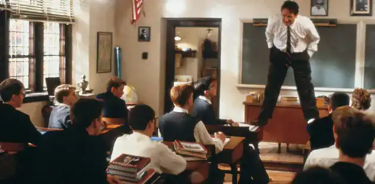
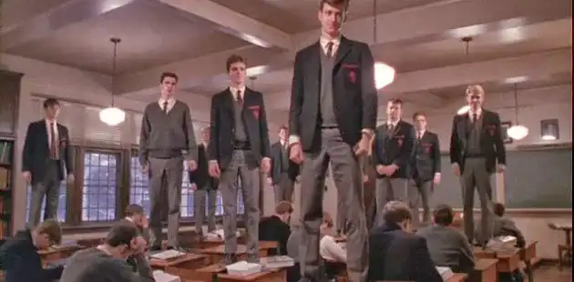

Youth who suffer from their parents' ambitions
It's the beginning of the school year at Welton Academy, an institution that strives for excellence and where personal aspirations have no place, only careers and the prestige of high office count. The new students are enrolled here by their parents who already have a destiny mapped out for their children, from studies to careers.
An atypical teacher
The students, whose fate we follow, meet Mr. Keating, the school's new English literature teacher. This man cares about his students, he wants to help them to blossom, to realize their dreams, and he also encourages them to refuse conformity. He teaches them each of these principles in his own way, through activities ranging from climbing on tables to playing soccer.
His vision of education is different; he sees it as teaching young people to think for themselves. In his classes, he tries to make them realize that life goes by quickly and that they should make the most of it because everyone will die one day, thus addressing the notion of Carpe Diem. With him, the students learn to see poetry in a different light. Gradually, Mr. Keating will guide them to freedom. In one of the film's most striking scenes, he portrays the peril of conformity which is nothing more than the loss of one's convictions.

After a few days, the students discover in the school archives that Mr. Keating was a former student of Welton's and that he was a member of the Dead Poets Society. Intrigued, they ask their teacher about it, who vaguely explains that it was young boys who met in an old cave to read poetry and « suck out all the marrow of life ».
The students will recreate this circle, meeting in a cave at night. However, they must do so discreetly, since a curfew is imposed by the school. Thus, during their secret meetings, many of them find the courage to assume their dreams and their convictions.
The consequences
Neil Perry, one of the students, decides to fulfill his dream of becoming an actor by auditioning for a play, in which he ends up getting the lead role. However, his father has his whole life planned out, wants his son to go to medical school and refuses to let him pursue his passion for acting. Neil, in spite of his father's advice, performs his play anyway. But when his father realizes it and comes to see him live, he reacts very violently and decides to withdraw his son from the Welton Academy, and to send him to a military school. Neil does not see any interest in living this life that he will not have chosen. The same night he decides to put an end to his life.
This tragedy terribly affects his parents as well as his classmates. Afterwards, the principal of Welton Academy, seeking to clear his institution of any doubt as to its validity, tries to find a scapegoat. Mr. Keating is therefore dismissed with a lot of false statements from the students under pressure from their parents and the management. When the teacher leaves, the students pay him a final tribute, defying discipline and showing that they have understood that they must think for themselves.
A critique of conformism
We quickly notice that in this academy, we make blasé students, destined for an "ambitious" future that they did not choose, we make sure that they can fit into the "molds" of society.
But with Professor Keating, a new vision of life is offered to the students. This film has a beautiful message and good values. It really makes you think about the impact of conformity.